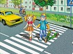
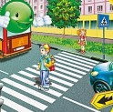
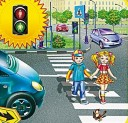
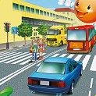
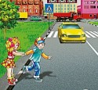
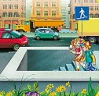
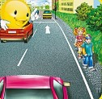
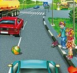

ПЕРЕЙТИ ДОРОГУ МОЖНО!

|
Переходить улицу можно по пешеходному переходу! Начинай переход медленно, чтобы водитель издалека увидел движущихся людей. |

|
Переходя дорогу, нужно сначала посмотреть налево, а на разделительной полосе посередине дороги – направо. Движение идёт по правой стороне, а на второй половине дороги машины едут в противоположном направлении. |

|
Зелёный сигнал светофора обозначает, что переходить дорогу можно. |

|
Если красный сигнал светофора застал на середине дороги, следует остановиться на разделительной полосе и дождаться зелёного. |

|
Ни в коем случае не перебегай дорогу перед близко идущей машиной! Ты не успеешь перебежать дорогу, а машина не может резко остановиться на месте! |

|
Если есть подземный или надземный переход, то дорогу нужно переходить по нему. |

|
Если пешеходная дорожка отсутствует, то идти нужно по обочине дороги навстречу движению транспорта. |

|
Нельзя играть на проезжей части или рядом с ней – это опасно для жизни! Даже если дорога свободна, машина может появиться неожиданно! |
Источник и подробная информация о действиях на сайте:
http://www.culture.mchs.gov.ru
ТЕЛЕФОН СЛУЖБЫ СПАСЕНИЯ: 112